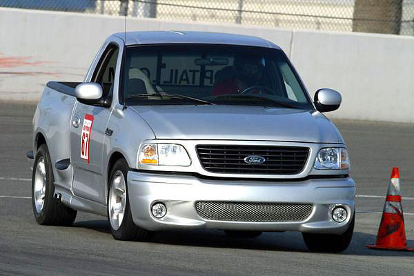
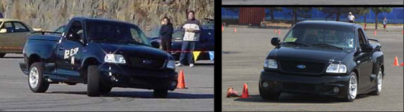
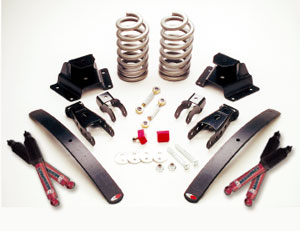
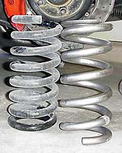
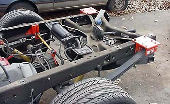
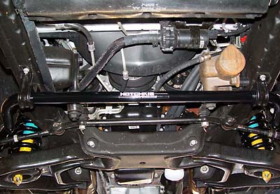
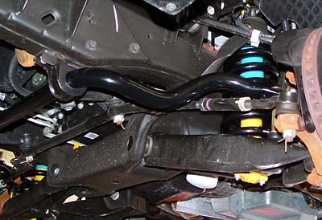
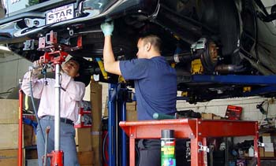

|
Performance Suspension Options |
|
 droptail cornering at the California Speedway This page presents some of the more common performance suspension options for the Lightning. A true performance suspension for the Lightning involves, at minimum, stiffer springs and stiffer shocks. Which means a rougher ride. If you are not willing to pay this price and just want to lower your truck, click here. The three true performance systems are from Roush Racing, So-Cal Speed Shop, and Hotchkis Performance. ROUSH: The Roush system ($1,175 for coils, leafs, and shocks) provides a relatively radical 2"/3" front/rear drop and, from all reports, is a superb setup for racing. The custom-calibrated Bilsteins are a nice touch. You can't go wrong with this system. After all, Roush designed the stock Lightning suspension. Below is a truck before and after a Roush installation:  =====  SO-CAL SPEED SHOP: The So-Cal Speed Shop system ($750 for coils and shackles/helper springs, $975 including shocks) provides a 1.75"/3" drop. The So-Cal setup seems well thought-out and complete, including everything needed to complete the drop right (including shock extenders and adjustable rear anti-sway bar links). So-Cal's approach is more street-oriented. So-Cal's kit retains the stock rear springs, adding helper leaves to retain load capacity. The main problem I have with So-Cal's kit is the use of the stock rear springs (too soft) and Eibach progressive-rate springs in the front. Progressive-rate springs are great for the street, but straight-weight springs provide better control on the track. Further, many Lightning owners have had problems with the Eibachs such as unpredictable drop, coil bind, and bottoming out. ===== RUSLOW: Another attractive option is getting a system from Ruslow (Stan Martin). He sells custom front springs in any rate from 1,000 lbs to 1,500 lbs (pictured to the right of the upside-down Hotchkis coil). Note the machining on the top of the Ruslow spring--they are designed to be installed without the top plastic spring isolator for better road feel. Installation of the stock spring isolator will bring the ride height back up near stock (Hotchkis supplies a thin urethane spacer with its coils). Stan also makes "sliders" which replace the rear hangars to eliminate the slop from the hangars and shackles. Stan's sliders seem well thought out and have been thoroughly track-tested, but I did not want to remove the bed, which is required for the slider installation. Also, the sliders are reported to be a little noisy for street use. Contact Stan through his forum at NLOC. ===== HOTCHKIS: I started with the Hotchkis kit ($950 for coils, leafs, and anti-sway bars) because it is a complete system, which decreases the learning curve. Hotchkis stuff is available from Chikenears and Lightning Force Performance. Hotchkis also now sells custom valved Bilsteins to match their springs (with the springs and anti-sways, it is called the "TVS"). In July 2003, Hotchkis introduced new Lightning/short cab-specific springs, which are softer and about 1/2" lower than the old parts. The old parts are now specified for crew cabs and Harleys. Here is a comparison of old versus new:
For a pure street application, the new rates are probably a good choice. The "old" Hotchkis springs are just a tad on the rough-riding side for the street, but I like the stiffness on the track. Some have questioned the effectiveness of the Hotchkis sway bars over the factory bars. However, I like the fact that the Hotchkis kit is a complete, turnkey system. The bars work well with the springs to produce reasonably balanced handling out-of-the-box. The handling is neutral, with a slight tendency towards understeer. Some photos of my the Hotchkis system as originally installed on my truck in 2002: 
 Note that the Hotchkis rears have only two leaves versus the stock four, but the leaves are thicker. Hotchkis does not supply rear bump stops. I picked up some shorter beehive stops from Energy Suspension (part # 9.9101GC). While I normally take pride in doing all of the work on my vehicles myself, the extra hassle of jacking the truck up on all four corners, my limited urban-dweller work area and the danger of dealing with springs caused me to take it to a pro. After watching two trained professionals work for six hours straight--with all the right equipment-- I know I made the right decision!Danny Bahn of DB Performance Engineering in Rosemead, California did an excellent job at a very reasonable price. Danny is a longtime Ford racer who can handle just about anything relating to a Ford (he even had a Merkur parked out back). While I was watching the guys work, several customers stopped by. All were pleased with the work done by DB Performance. Call Danny at (626) 571-7126 For those with the equipment and cojones to do it themselves, some notes on front coil installation are here. Rear spring/shackle instructions are here. |
� 03/20/2006 Tim Skelton